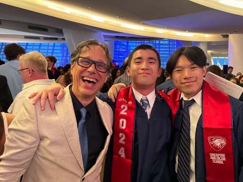
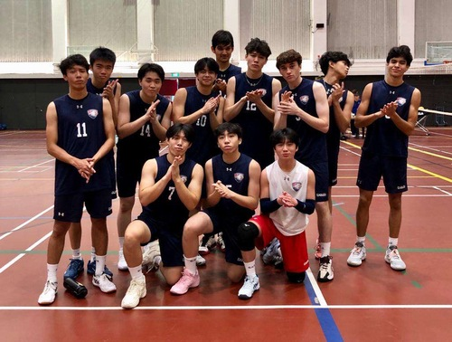
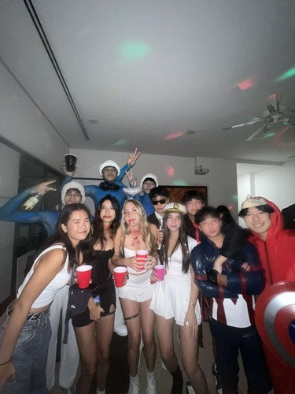
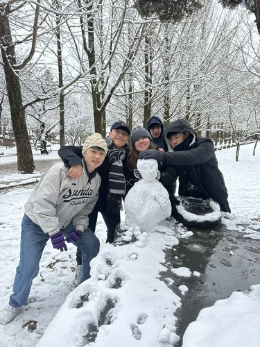
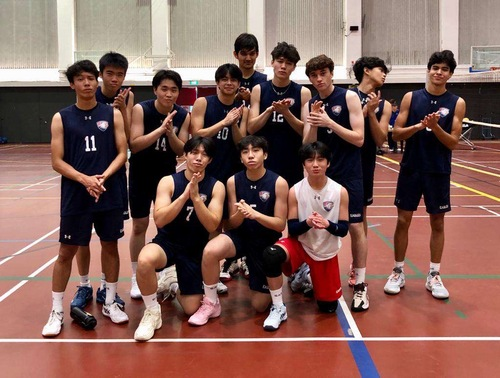
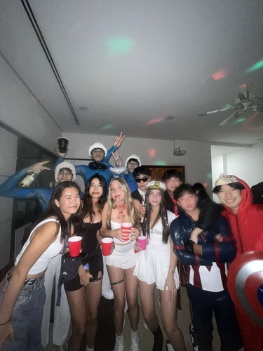
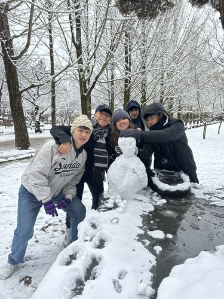

Caidan Tan
From a young age, I have always been driven by a deep curiosity and a passion for learning. Whether it was exploring new ideas or finding creative solutions to everyday problems, I’ve constantly sought out challenges that push the boundaries of my understanding. This insatiable thirst for knowledge has been the foundation of my personal and professional journey, shaping me into the individual I am today.
I grew up in a supportive environment where curiosity was encouraged, and I was fortunate to have role models who instilled in me the value of hard work, persistence, and adaptability. My upbringing helped me develop a well-rounded perspective on life, one that values growth through experiences, both personal and professional. These early influences played a pivotal role in my career choices and the direction of my life, leading me to pursue a path where passion meets purpose.
Academically, my journey began with a strong focus on psychology and medicine, which I pursued at the University of California at Riverside. This academic foundation provided me with the tools to analyze complex problems, think critically, and collaborate with others to find innovative solutions. My time at university was not only about acquiring knowledge but also about personal growth. It was here that I discovered the importance of leadership and teamwork, qualities that have become central to my professional ethos.
One of the earliest and most impactful experiences in my career was my internship at the International Counseling and Psychology Center in Singapore, where I gained first hand experience in [describe any specific tasks or responsibilities]. This opportunity allowed me to deepen my understanding of mental health support and counseling, while also developing key interpersonal and clinical skills that have shaped my perspective on holistic care.
As I continued to explore opportunities to broaden my horizons, I had the chance to intern under Dr. Edward K. Wong, a highly respected physician based in Los Gatos, California. Working alongside Dr. Wong and his team not only sharpened my understanding of the medical field but also taught me valuable lessons about patient care, teamwork, and the day-to-day operations of a private practice. This internship was further complemented by my experience at Good Samaritan Hospital, where I gained exposure to a larger, more dynamic healthcare setting. At the hospital, I worked on various projects that enhanced my understanding of patient management, medical procedures, and the importance of collaborative healthcare delivery.
In addition to my healthcare-related experiences, I also worked at the gym of my alma mater, Singapore American School. This role may seem unrelated at first, but it provided me with essential lessons in discipline, leadership, and community engagement. Being responsible for maintaining the gym and interacting with students and staff taught me the importance of teamwork, time management, and creating a supportive environment for others.
Experience
Intern at the International Counseling and Psychology Center in Singapor
• Managed social media and attracted clients
• Scheduled and helped clients
• Worked to bring the Keeping the Love You Find workshop to Asia
Intern with Dr. Edward K Wong in Los Gato
• Sat-in with patients
• Filing and shredding at admin
Education
Singapore American School
University of California Riverside
Portfolio







